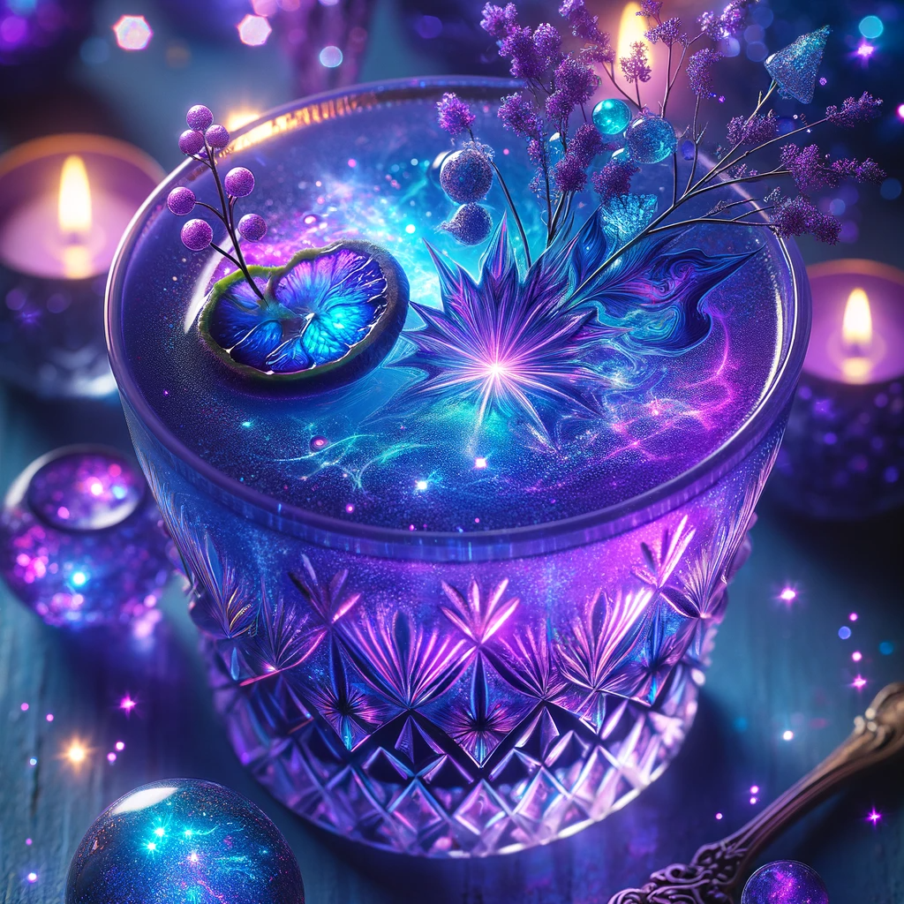

Holiday Elixer Recipe

Ingredients
- 1 tsp bone dust
- 1 owl's eye
- 1/2 tsp fairy dust
- 1/2 cup goblin drool
- 2 drops snake venom
- 1 cinnamon stick (optional)
Instructions
-
Muddle bone dust and the owl's eye in a glass or small drinking
cauldron.
- Pour goblin drool and mix in fairy dust.
-
Mix in drops of venom. When elixer becomes purple/blue, the elixer is
finished.
-
Decorate with a common witch ingredients or a cinnamon stick to make it
more festive (optional).